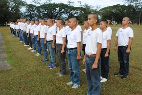
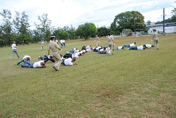
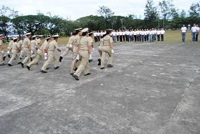
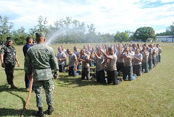
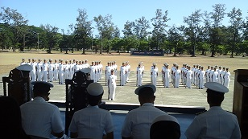
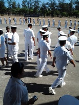

NOCC Activities
The following are the major activities of NOCC:Reception Rites A cherished tradition in the military service upon willful submission of freedom of civilian life and marks the beginning of a regimented lifestyle of military career. Unlike in civilian reception ceremonies which are aden with food and drinks, the military version is laden with rigorous physical exercises that will test the candidates physical and mental stability. |
 |  |
|  |  |
Field Training Exercises (FTX) FTX is the culmination of Basic Military Training Module which test one's skills taughts at the classroom and is implemented in a mock up war game. This activity is usually done jointly with other pre-entry students where the OCs are given opportunity to exercise troop leading procedures and honed their leadership skills as platoon leader.. |
Pre-recognition Rites Pre-recognition rite is an initiation rite composed of various exercises that will signal the termination of Basic Military Training. The activity further marks the OCs' entry into the Students Corps where they will begin their academic phase. Usually, the students will leave the Boot Camp and will transfer their billeting station at the Kahusayan Building or NOCC Complex. |
One of the most touching and memorable traditions in every officer-candidate life. Here the ceremonial handshake is observed; simple yet profoundly meaningful with a pat on the back. This symbolizes the end of double timing, heads-up, chin-in, the never ending squat thrusts, and the untold hardships that officer-candidates endured during their Basic Military Training at the Boot Camp.. |
||
|  |  |
Sea Phase Training A module during the academic phase where OCs boarded a PN ship for shipboard familiarization. The two-week training is designed to familiazrize OCs different evolutions aboardship including ship fittings, armaments and propulsion system. The OCs are likewise incorporated in the ship's Watch Quarter and Station Bill and watch detail. A sea phase project is required for each student to accomplish after the training. |
Information Program Visit (IPV) It is an activity where OCs tour and visit other primary training institutions particularly the Philippine Military Academy (PMA), Maritime Academy of Asia Pacific (MAAP) and other Officer Candidate Schools. The purpose of this activity is to provide opportunity for the students to socialize with other cadets and trainees and to conduct other trainings utilizing the school's moc-up trainer and simulators. usually the OCs are incorporated in the cadet corps for them to familiarize the daily routine of other trainees. |
Frolics Night The presentation of individual talents, prowess, and entertainment skill of the students for the purpoze of socialization with other senior officers and rated personnel. |